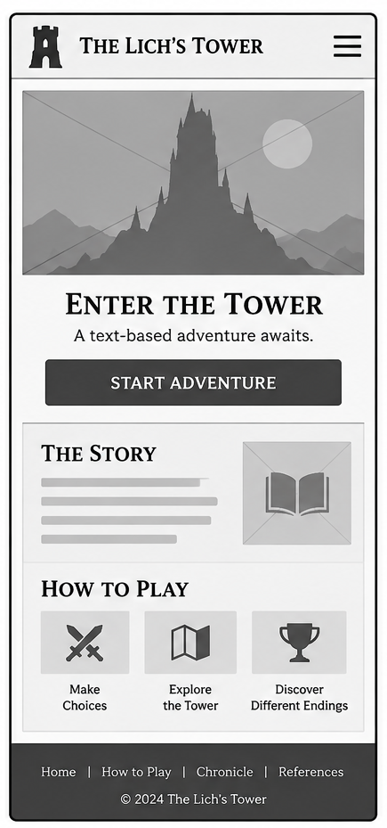
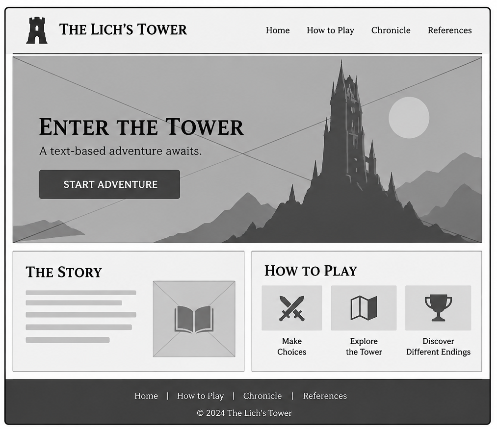

Site Name
The Lich's Tower
I chose this name because the story takes place in a mysterious tower controlled by a powerful Lich. The name represents the fantasy and adventure theme of the game, where players must explore the tower, make decisions, and try to rescue a princess.
Site Purpose
The purpose of this website is to provide an interactive fantasy adventure where players can explore a mysterious tower, make choices, and discover different story outcomes. The website will include an introduction to the story, instructions on how to play, the interactive game, and a page where players can view their progress. Players will also be able to save their progress and continue their adventure later.
Scenarios
- How do I play The Lich's Tower?
- Can I save my progress and continue playing later?
- Do my choices change the story and its ending?
Color Schema
I chose dark purple and gold to create a mysterious fantasy atmosphere. The lighter colors will help make the text easy to read.
Dark Background
#161320
Main page background.
Deep Purple
#241B32
Sections, cards, and header backgrounds.
Antique Gold
#D6AD73
Headings, borders, and important details.
Ivory
#F3EDF5
Main text and paragraphs.
Muted Lavender
#C8C0CF
Secondary text and descriptions.
Typography
I chose two fonts that match the fantasy theme while keeping the website easy to read.
Cinzel — Headings
The Lich's Tower
Cinzel will be used for headings and titles to give the website a medieval fantasy style.
Lora — Body Text
Your journey begins inside a mysterious tower, where every choice can change your destiny.
Lora will be used for paragraphs, instructions, and story descriptions because it is easy to read.
Wireframes
These wireframes show the planned layout of the home page for mobile and desktop screens.

